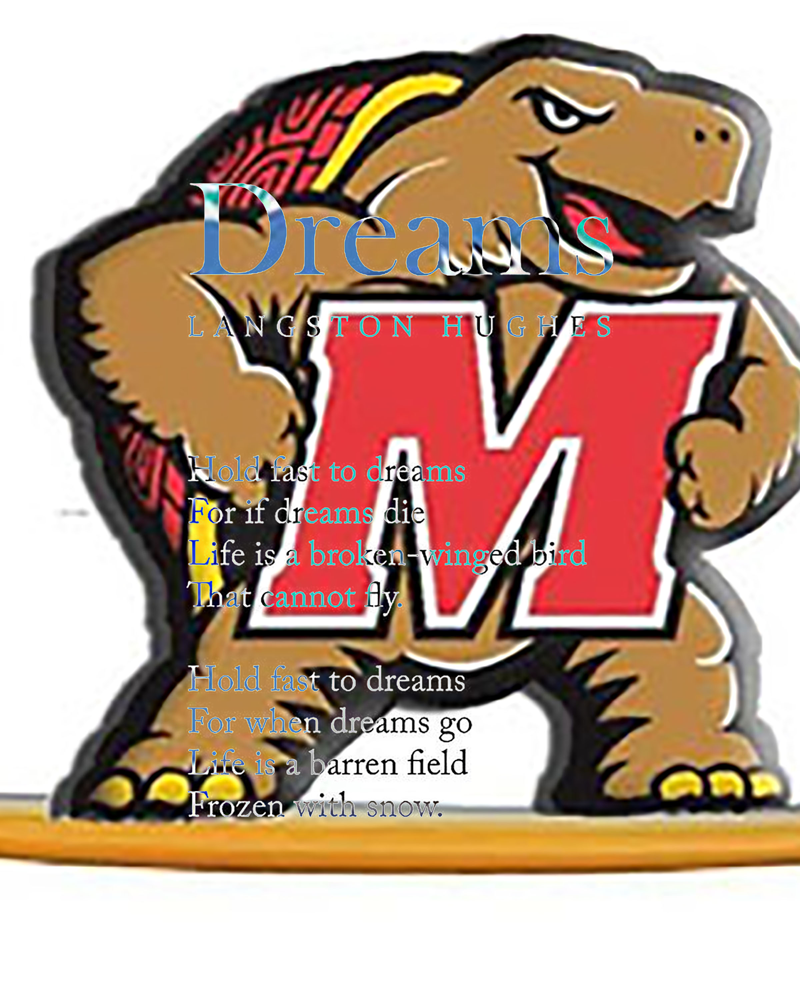
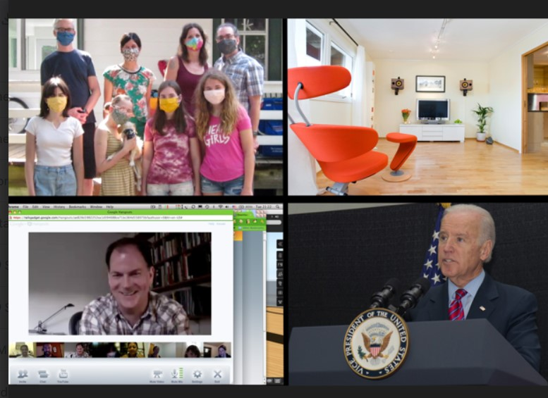
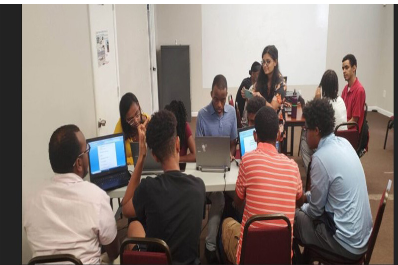
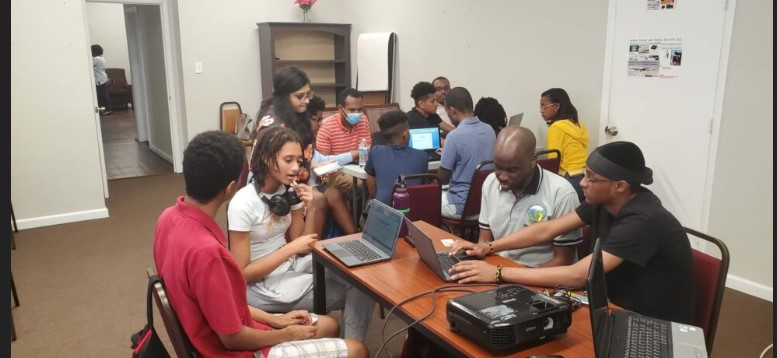
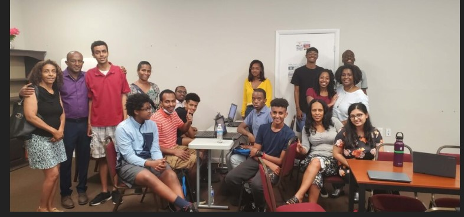

I'm Jonathan Chekol
Audio Video Media Production Student at HCC.
Bio
Jonathan Chekol is currently a candidate for the associate arts degree for Audio Video Media Production at Howard Community College (HCC). He is a kind, friendly and organized person with attention to detail. Sports broadcasting has been a dream job for Jonathan since childhood. As a result, he has an in-depth knowledge of sports such as football, basketball and soccer. With a voice made for broadcasting, Jonathan hopes to make his career as a sports commentator. Jonathan worked last year for the Howard Community College (HCC) Athletics Department as a Multimedia Sports Communication Intern. In this capacity, he created game highlights, and promotional pictures for websites, coordinated with coaches to write profiles for individual student-athletes and other duties that were assigned to me by the manager of sports information. Chekol currently works for the HCC Times as a sports and campus profile writer. As a sportswriter, he covers events that are going on nationally and on-campus and as a campus profile he covers different programs of the campus. Chekol is also considering a career in IT because of his proficiency and knowledge of technology particularly with Google, Microsoft and Adobe applications. Outside of sports and career related projects, Chekol volunteers in his community. Jonathan has volunteered for Tsinat Institute in Silver Spring, MD, working with students with autism supporting them to interact in a positive and meaningful way.
My Portfolio
I made a poem blend and photomontage using Photoshop for my Principles of Film and Media Production class
 I voluntered autistic students with in group learning sessions self-reflection exercises using project-based learning
  Resume
Download Resume Resume
Contact Me
Columbia, MD
Phone: 443-474-6076
Email:jonathanchekol@gmail.com